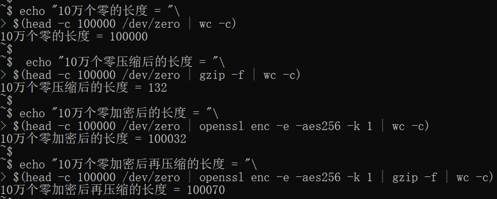
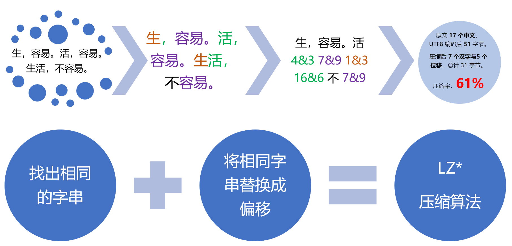
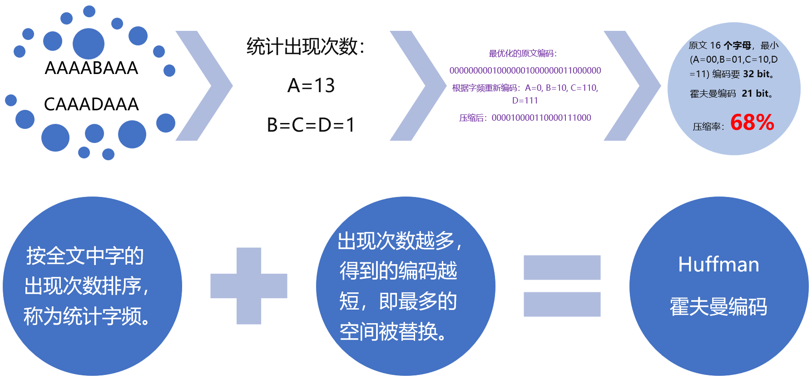
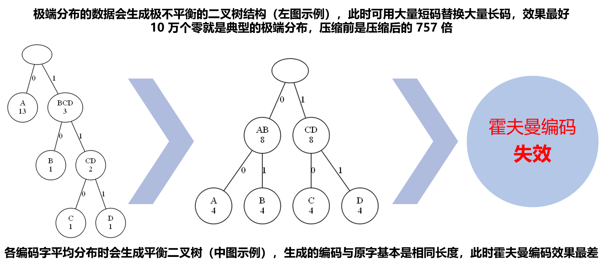

在 SDWAN 诸多技术点中，有一种数据压缩、重复数据删除的的技术，把网络层的包或应用层的数据流压缩后再传输并在送达目标前解压，可以弥补很多应用传输不压缩的缺陷。该技术常声称能将客户的带宽利用率提升几倍，看起来很厉害的样子，很多国内外大厂也以此为卖点。
一年多前，我第一次以售前的身份出差北京某准上市公司客户，当时客户觉得这样的功能太亮了。当时从码农岗转过去没多久，多年的算法和工程经验还算扎实，我很清楚客户所有的流量都是加密的，这样的压缩只能起负作用。于是我当场就信心十足的贬低这个功能为鸡肋，并当场实验打脸友商大厂。当时的实验是这样的：
实验还原：

实验结论：加密后的数据，不但无法压缩，反而因压缩而增加了长度！
这件事之后，我认识到我过去积累的技术广度和基础理论也将是我在售前岗位的坚实基础，从此更加自信。
但在有了更多交流经验之后，我反思过我当时的做法还是过于就事论事了，没顾及到当时某些看好友商的客户的感受。
言归正传，为什么加密后的数据会无法压缩呢？概括一下就是：
压缩依赖于数据的统计特征，但加密的目标刚好是破坏数据的统计特征。
当加密发生在压缩的上层，压缩自然无用了。
加密过程主要应用混乱与扩散这两个原则：
- 混乱是说要破坏原始数据的规律性，让统计关系尽可能复杂，尽力让密文不可被找出规律性用以反推原文。简单说就是把原文破坏到面目全非，谁也认不出来。
- 扩散原则是说将原始数据微小的变化雪崩式放大，消除密文相似性，让统计特性更隐蔽。就是把原来相似的内容，加工成完全不同的样子。
- 比如要加密我们的日常常用字，它们是非常集中非常有规律的。加密后生成为乱码，那这种规律性就被彻底破坏了，而且相同的词也会因为位置不同而有不同编码。
- 即便我们对原文做了非常细小的改动，密文的变化也将是非常大的，这是加密过程应用两个原则的结果。
压缩过程主要应用 LZ* 算法与霍夫曼编码：
- LZ* 算法思路是找到相同的数据块，并以引用位置做标记。
- 霍夫曼编码会按照数据块的出现概率编码，让高频块使用最短编码，使空间最优化。
这两种算法是压缩软件的核心，但密文让这两种算法无法施展。先看 LZ* 算法：
LZ* 算法的原理就像玩连连看一样，相似的数据块越多，效果越好。

原文中往往会有大量重复词，但密文将是完全的乱码，LZ* 算法几乎无法找到相同数据块。
霍夫曼编码也会失效：
霍夫曼编码的原理：

数据在极端分布时，能将最短的编码分配给最高频的词，此时效果是最好的。
在各种霍夫曼编码树中，歪脖子树是最受偏爱的，越歪越爱：

加密后的密文，完美克制了压缩的两个核心算法。压缩功能不光浪费了计算资源，而且也因为添加了压缩头和编码表而增加了数据长度，真是赔了夫人又折兵。
2019-11-22 深圳
引自《三体》的降维打击：我将消灭你，但与你无关。